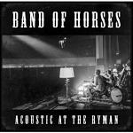
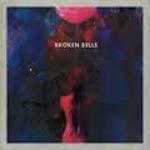
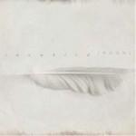
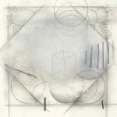
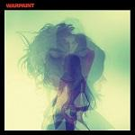

Music Reviews
-

Band Of Horses Acoustic At The Ryman
Four albums in and Band Of Horses decide to release an acoustic set. All very nice, but after a few plays Graeme Marsh is already reaching for his Neil Young, Live At Massey Hall CD...
Graeme Marsh listens in... -
Marissa Nadler July
The folk singer songwriter joins the Sacred Bones roster on her latest, a soothing and familiar listen that's immediately loveable and becomes moreso as you get to know it.
Dominic James Stevenson reviews... -
CEO Wonderland
Densely-crafted art-pop from the former Tough Alliance member, this is a record full of vibrant, catchy melodies with plenty of subversive overtones.
Stephen Wragg reviews... -
Temples Sun Structures
Prematurely revered psych-pop act Temples release their much anticipated debut, a gently ornamented effort that synthesizes their sundry influences with all sorts of psychotropic imagery.
Juan Edgardo Rodríguez values the opinion of Noel Gallagher? -
East India Youth Total Strife Forever
The biggest beneficiary of the critical rush to discover 2014’s first great record, William Doyle is currently riding high on the wave of acclaim generated by his debut offering as East India Youth.
David Coleman cuts through the hype... -

Broken Bells After The Disco
Broken Bells return with a fine soundtrack to post-party blues and bliss, for the most part.
Luiza Lodder loves the hook in the opening track... -

Snowbird Moon
Soft, dreamy songs all wrapped up in layers of Cocteau Twins-like beauty featuring an all-star cast of, well, woodland animals…
Graeme Marsh takes a look into another world... -

Actress Ghettoville
Ghettoville, the latest release from electronic producer Actress, is as cold and bleak as it gets and damn proud of it, too. But does this mean it's as engaging as the producer's previous works?
Peter Quinton packs his bags and books a flight for Actress's latest world, Ghettoville... -
Maxϊmo Park Too Much Information
Hard to believe but Too Much Information is Maximo Park’s 5th studio album; question is, how does it fare with previous efforts that have ranged from the exciting debut A Certain Trigger to the disappointing Quicken The Heart?
Graeme Marsh reviews... -

Warpaint Warpaint
Three and a bit years after their debut, the hotly tipped shoegaze-leaning act are back, armed with a bunch of new synths and even more frosty impenetrability.
Mark Davison would just like to say "they really are a great live band, though"...